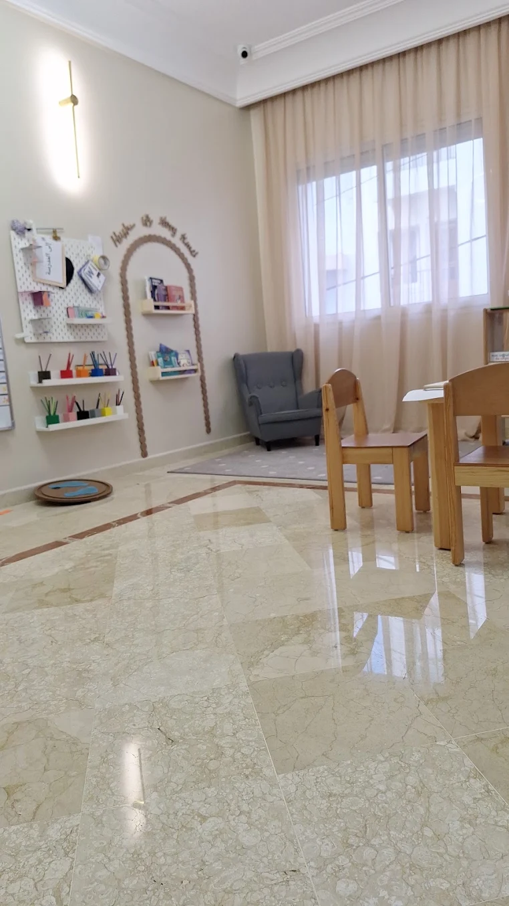
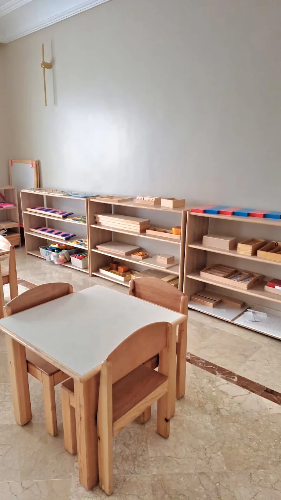

Mes Colibris Montessori accueille les enfants de 0 à 6 ans dans un cadre préparé selon la pédagogie Montessori, où le français, l'arabe et l'anglais rythment chaque journée, au cœur de Maârif Extension à Casablanca.
Chaque enfant évolue à son rythme, dans une ambiance préparée où l'autonomie, la concentration et la curiosité naturelle sont encouragées au quotidien.
Du matériel sensoriel Montessori à disposition, pour que l'enfant choisisse, explore et progresse par lui-même.
Le français, l'arabe et l'anglais rythment chaque journée, portés par une équipe qui accompagne l'enfant avec attention.
Un espace pensé pour rassurer, encourager la socialisation et respecter le développement affectif de chaque enfant.
Une communication régulière avec les parents pour suivre ensemble les progrès et le bien-être de l'enfant.

Un espace sécurisant pour les tout-petits, pensé pour développer les premiers gestes d'autonomie, le langage et la motricité, en douceur.

Ateliers Montessori, éveil aux lettres et aux nombres, expression artistique et vie pratique, jour après jour.
Les enfants sont accueillis en douceur, activités libres au choix.
Travail individuel avec le matériel sensoriel et pédagogique.
Comptines, histoires et jeux en français, arabe et anglais.
Déjeuner accompagné puis sieste ou temps calme selon l'âge.
Arts plastiques, motricité et jeux collectifs dans la cour.
Retour au calme et transmission aux parents.
Mes Colibris Montessori accueille des familles venant de tout le secteur, notamment :
60, rue Ibnou Kattane, quartier Berger, Maârif Extension, Casablanca 20100 — carte Google à intégrer
Au 60, rue Ibnou Kattane, quartier Berger, Maârif Extension, Casablanca — à deux pas du boulevard Brahim Roudani.
Dès la naissance jusqu'à 6 ans, entre la Communauté enfantine et la Maison des enfants.
Le français, l'arabe et l'anglais rythment les journées, portés par une équipe attentive à chaque enfant.
Ouverture à partir de 7h30 du lundi au vendredi. Contactez l'équipe pour les horaires détaillés.
Par téléphone ou WhatsApp au 06 21 48 78 53, ou via le formulaire de contact ci-dessous.
60, rue Ibnou Kattane, quartier Berger, Maârif Extension, Casablanca 20100
📍 Ouvrir dans Google MapsLundi – Vendredi, dès 7h30
4,9/5 — 17 avis